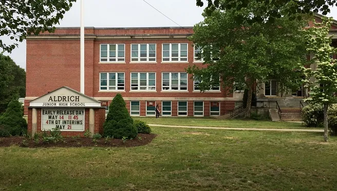

Schooling
My schooling was crazy and I've been to many different places. Here's how it went, and I'll break it down in a bit cause there's a lot to unpack.
- Wyman Elementary School
- Aldrich High School
- Vets Memorial Middle School
- Pilgrim High School
- University of Rhode Island
- Community College of Rhode Island
- New England Institute of Technology
So it started off with elementary school obviously which went smoothly. I loved Wyman, I always had great teachers, the school wasn't too big, and it got me into a lot of the hobbies, and friend groups, that I am still in today. From there on out though things got weird.
I went to Aldrich for my 7th grade ONLY because they decided to close the school the year after I got there. Around this time, they had recently converted Vets Memorial High School into a new middle school. So my last year of middle school was ALL the way over there. I did some fun things there though, that was my first time ever going to Six Flags and a proper roller coaster. Then came high school which again went fine.
After high school I decided to go to URI for a few years before deciding that it wasn't the right fit for me. Then I was in CCRI, albeit for a very short time, as this was just for cataching up at URI (which I wasn't continuing anyway) so then I brought myself to NEIT. Now here I am as a software engineer! It's been quite the journey!
